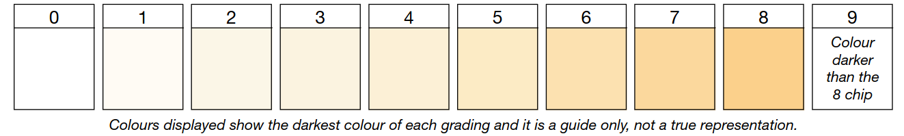
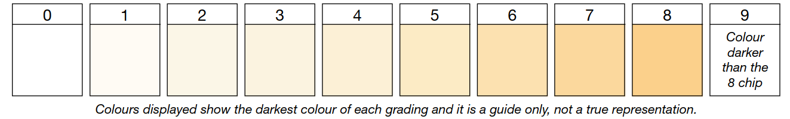

Meat quiz
Welcome to the Meat judge quiz!
このクイズはICMJオーストラリア大会のRetail cut Identification とSaleable items identificationの練習用です．画像は無断転用してしまっているので好ましくはないのですが,,, トレーニング専用で，SNSの投稿や動画配信への使用は控えていただきたく思います．
Retail/Salable quiz
画像が表示されますので，それを見て回答を入力します．入力し終えたらanswer ボタンを押して回答を確認します．正解していたらnext ボタンで次の画像へ，間違っていたら表示される答えと見比べて復習します．※回答は大文字小文字の区別なく入力して大丈夫です．スペースの有無はマニュアルに沿っています．bone in やboneless に注意です．
Color quiz
色が表示されますので，それを見て回答を入力します．回答はAusmeatのスコアを入力してください．入力し終えたらanswer ボタンを押して回答を確認します．正解していたらnext ボタンで次の画像へ，間違っていたら表示される答えと見比べて復習します．
 
